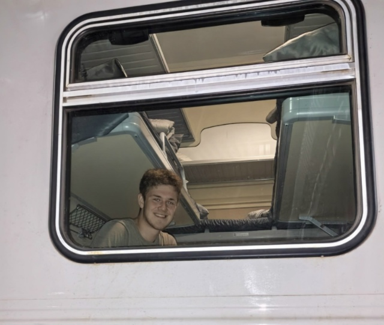
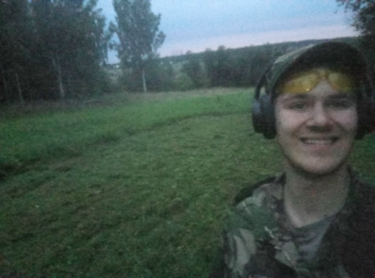
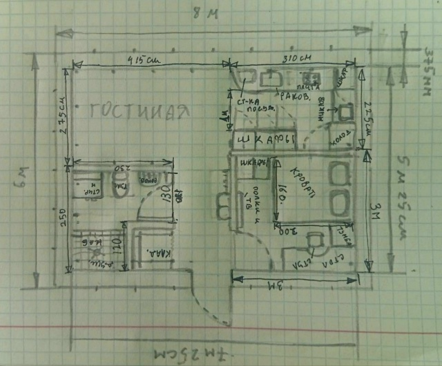

Я только учусь, но уверен, что спустя время научусь большему и разовью свои навыки
я занимаюсь борьбой и учусь на художника живописца, учу английский и программирование
В ближайшее время на моем пути встанут определенные трудности, и дабы достичь полной финансовой и общей независимости в моих, удивительно масштабных планах я принял решение развивать как гуманитарные, так и технические навыки, к примеру купил набор ардуино и ноутбук и начал обучаться азам программирования. О финансовой грамотности я ничуть не забыл, веду денежный учет в Гугл таблицах, и остальные финансовые ведомости, создал резервный счет, так же ежемесячно инвестирую в долгосрочные инструменты. Стараюсь выполнять задания по учебе насколько могу в срок и учиться на совесть, работаю физически и планирую в ближайшем будующем начать возведение дома из газоблока 6 на 8, рассматриваю дальнещее поступление в зарубежный ВУЗ на магистратуру в сфере AI/IT, в этом мне и пригодиться английский язык и знание кода
Дополняю свой проект своими достижениями, идеями и мыслями, на момент дополнения за окном 5 октября 2026 года, пишу я это уже будучи на 2 курсе колледжа, пока писал заметил что фото не отображаеться, исправил и сделал качественно
Вернемся к стройке, я уже составил план по строитеоьству и разбил по пунктам, первым из которых идет заливка плиты, подготовка начата, опалубка и виброплита есть, есть подготовленное место где я прокосил опушку под фундамент
Закладка фундамента будет осуществлена в три этапа:

Я рассматривал несколько вариантов фундамента, материала и крыши остановившись на монолитной плите, газоблоке и односкатной крыше - такая сугубо мужская берлога
рассматривал варианты планировки, но пока не пришел к общему решению, отдельные комнаты или крупное открытое пространство, но уверен что в светлых тонах, спокойно и не броско чтобы не отвлекало
